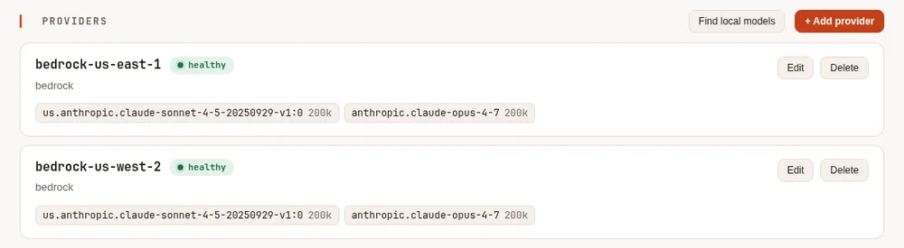
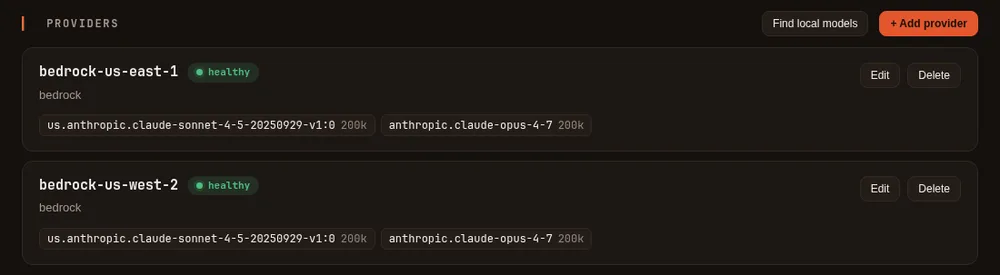
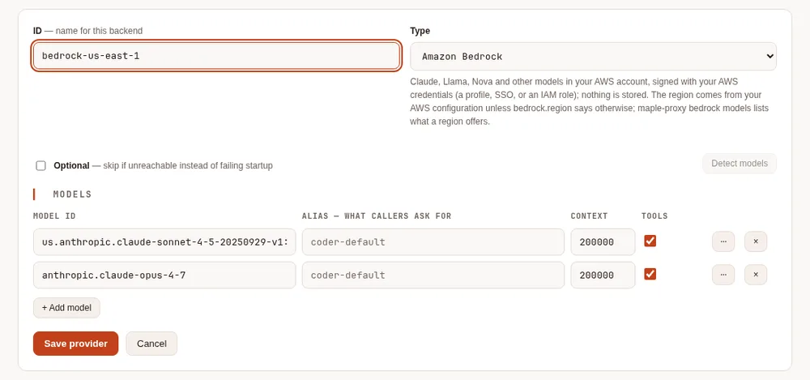
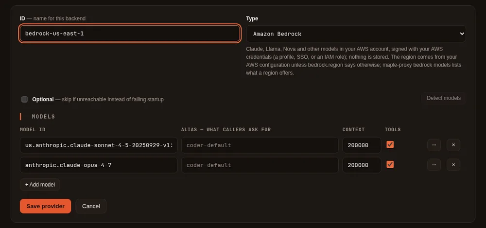

Amazon Bedrock #
On this page
Use the models in your company's AWS account through Amazon Bedrock: Claude, Amazon Nova, Llama, Mistral and the others Bedrock offers. Requests are signed with your own AWS credentials and billed to your AWS account under your AWS agreement. Maple stores no AWS key: on a laptop it uses your AWS profile or SSO sign-in, and on Kubernetes the pod's IAM role.
Follow AWS's terms and each model provider's terms. AWS makes the account holder responsible for the people who use the service through the account.
In plain words #
- What it is. Claude, Amazon Nova, Llama and the other models in your company's AWS account, through Amazon Bedrock, billed to that account.
- Why you want it. No new key: Maple signs each request with the AWS sign-in you already have (a profile, SSO, or the pod's role on Kubernetes).
- What to do. Sign in to AWS as usual, then
maple-proxy bedrock modelsto see what your region offers andmaple-proxy bedrock addto add it. The provider then appears on the setup page's Providers tab, where Edit changes it.
On a laptop #
Sign in to AWS the way you already do, then add Bedrock to the proxy:
aws sso login --profile work # or any other way the AWS CLI finds credentials
maple-proxy bedrock models --profile work --region us-east-1
maple-proxy bedrock add --profile work --region us-east-1 \
--model us.anthropic.claude-sonnet-4-5-20250929-v1:0 --model anthropic.claude-opus-4-7bedrock models lists the text models and inference profiles the region offers your account, and which Bedrock API
the proxy uses for each. bedrock add checks the models you name against that list and writes the provider into
config.yaml (a running proxy picks it up at once). The entry it writes:
providers:
- id: bedrock
type: bedrock
bedrock:
region: us-east-1 # default: the region your AWS configuration names (AWS_REGION or the profile's)
profile: work # default: the AWS default chain
models:
- id: us.anthropic.claude-sonnet-4-5-20250929-v1:0
context_window: 200000
supports_tools: true
- id: anthropic.claude-opus-4-7
context_window: 200000
supports_tools: trueOn the setup page, Add provider with the type Amazon Bedrock works too: type the model ids. The region and
profile live in the bedrock: section of the raw configuration (the form keeps them when you edit the provider).


maple-proxy bedrock add (a demo setup, with a stand-in for Amazon Bedrock).

Where the credentials come from #
The proxy uses the AWS SDK's own credential chain, in its usual order, and the SDK refreshes temporary credentials before they expire:
- Environment variables:
AWS_ACCESS_KEY_ID,AWS_SECRET_ACCESS_KEY,AWS_SESSION_TOKEN, orAWS_PROFILE. - The shared files
~/.aws/configand~/.aws/credentials: a profile (bedrock.profile), an IAM Identity Center (SSO) profile,credential_process. - Web identity:
AWS_WEB_IDENTITY_TOKEN_FILEandAWS_ROLE_ARN(IAM roles for service accounts on EKS). - The container credentials endpoint: ECS tasks, and EKS Pod Identity.
- The EC2 instance's role.
bedrock.role_arn assumes a role with whatever the chain found, for every request of that provider. A Bedrock API
key in AWS_BEARER_TOKEN_BEDROCK is used instead of signing, as AWS's own tools do, and only over https.
When the sign-in runs out (an expired SSO session, say), requests to that provider fail as not authorised and the
setup page's provider list says that no usable AWS credentials were found. Run aws sso login again; nothing needs a
restart.
A fixed access key, only if you must: put it in the environment and run
maple-proxy bedrock store-key --id bedrockIt keeps the key in the secret store and writes only references into config.yaml
(access_key_id: ${secret:provider/bedrock/aws_access_key_id} and the same for secret_access_key). A key written
into the file itself is refused.
Permissions #
The identity needs bedrock:InvokeModel and bedrock:InvokeModelWithResponseStream on the models (and on the
inference profiles you use), plus bedrock:ListFoundationModels and bedrock:ListInferenceProfiles for bedrock
models and bedrock add.
Model access #
A model must be available to your AWS account in the region before it answers. Some model providers ask for a one-time use-case form or an AWS Marketplace subscription first; open the Amazon Bedrock console in that region to check. Until then, requests fail as not authorised, and the message names the model, the region and the console link. Other models on the same provider keep working.
Regions and inference profiles #
One provider is one region with one set of credentials: an account in Maple's sense. Several regions are several providers:
maple-proxy bedrock add --region us-east-1,us-west-2 --model us.anthropic.claude-sonnet-4-5-20250929-v1:0This writes bedrock-us-east-1 and bedrock-us-west-2 and chains them with
�2�: a throttled region (HTTP 429), a spent service quota or an outage
moves the request to the next one. The providers can be assigned to people and teams and shared
through a hub, like any account. bedrock-us-west-2/<model> asks for one region's copy.
Inference profiles route a request across the regions of a geography, for more capacity: their ids start with
us., eu., apac. or global. in front of the model id. Some models are offered only through a profile; when you
ask for such a model by its plain id, the error says to use its profile id instead. Your account's own application
inference profiles (an ARN) work as model ids too.
Which Bedrock API #
Claude Opus 4.7 and later go through Bedrock's Messages API endpoint (bedrock-mantle), which speaks Anthropic's
Messages format; every other model, earlier Claude models included, goes through Bedrock's Converse API. Both stream,
take tools and images, and use prompt caching where the model supports it (cache points are placed only on models that
accept them). To send every Claude model one way, set bedrock.claude_api to messages or converse (default
auto).
On Kubernetes (EKS) #
The Kubernetes samples include a component for IAM roles for service accounts in
config/cloud-identity/eks/. Add it to your overlay:
# config/single/kustomization.yaml (or config/ha)
components:
- ../cloud-identity/eks- Create an IAM role whose trust policy allows the cluster's OIDC provider for
system:serviceaccount:maple:maple-proxy, with the Bedrock permissions above. - Put the role's ARN in
config/cloud-identity/eks/serviceaccount.yaml(eks.amazonaws.com/role-arn). - Set
bedrock.regionin the provider.
The EKS webhook gives the pod AWS_ROLE_ARN and a projected token in AWS_WEB_IDENTITY_TOKEN_FILE; the proxy
exchanges it for the role's temporary credentials. The component also turns off the EC2 instance metadata
lookup, so a pod whose role is missing fails as not authorised rather than using the node's own role. For EKS Pod Identity, remove the annotation and create a pod
identity association for maple/maple-proxy instead. With several replicas, each one uses its own pod's role: no AWS
credential is shared through the central storage.
Cost and usage #
Bedrock does not state a price on its replies, so the proxy records the tokens each call used (input, cached input
and output) and no price; your AWS bill is the authority. For Claude models on the Messages API,
estimate_cost: true on the provider adds an estimate from Anthropic's list prices, labelled as an estimate; AWS's
own pricing can differ (regional endpoints, commitments). See Cost, and its section on price_as for a
model whose name does not say which Claude model it is.